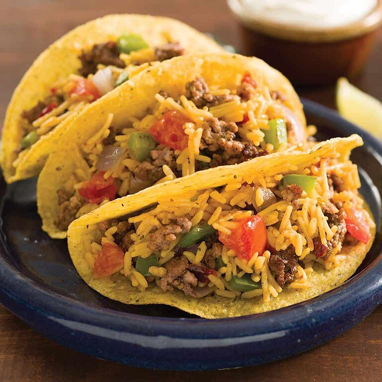

Mexican Rice & Beef Tacos

A Mexican rise and beef tacos, very easy and quick to make
These beef tacos with bell peppers, onion, and Mexican rice are quick and easy--just what you need after a busy
day.
Ingredients
- 2 tablespoons I Can't Believe It's Not Butter! Spread, divided
- 1 pound lean ground beef
- 1 green or red bell pepper, chopped
- 1 medium red onion, chopped
- 2 cups water
- 1 (5.4 ounce) package Knorr Fiesta Sides - Mexican Rice
- 1 medium tomato, chopped
- 8 taco shells
Steps
- Melt 1 tablespoon Spread in large nonstick skillet over medium-high heat and brown ground beef, seasoned
with salt and
pepper, if desired; remove and set aside.
- Melt remaining 1 tablespoon Spread in same skillet over medium-high heat and cook peppers and onions,
stirring
occasionally, until crisp-tender, about 5 minutes. Stir in water, Knorr® Fiesta Sides™ - Mexican Rice and
tomato and
bring to a boil over high heat. Reduce heat and simmer, covered, 7 minutes or until rice is tender.
- Stir in beef; heat through. Spoon into taco shells and serve, if desired, with lime wedges. Top, if desired,
with your
favorite taco toppings such as sour cream, chopped red onion and shredded lettuce.
Return to main